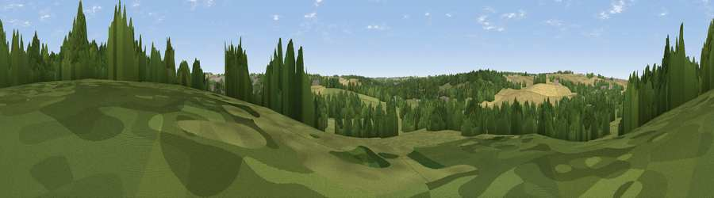

Viewpoint near Littlebury
#43756 in England · top 65% of its area beats it · near LittleburyThe view, rendered

A 360° render of this exact spot computed from the terrain model, tree cover and land cover — summer colours, afternoon light, calibrated against photographs of famous viewpoints. Real trees, hedges and buildings will differ in detail.
The panorama
Grey silhouette: terrain skyline in each direction (720 bearings, Earth curvature and refraction included). Dashed green: skyline with trees (+15 m) and buildings (+8 m) as obstacles. Blue strip: how far the ground is visible on each bearing.
Where the view opens
Wedge length = distance to the farthest visible ground on that bearing (vegetation-aware). Rings at 10, 25 and 50 km.
What fills the view
33% grassland · 32% cropland · 30% woodland · 5% built-up
Angular shares of the visible panorama (visual magnitude), not map area. Landscape diversity 0.54 (0–1 Shannon).
Key numbers
More beautiful places nearby
The staircase of upgrades: each row has a higher view potential than everything closer. Driving times are estimates from straight-line distance, calibrated against real road routing — check an actual route before setting out.
| Place | Direction | Drive | Score |
|---|---|---|---|
| Viewpoint near Littlebury | WSW · 1 km | ~4 min | 26.0 |
| Heavy Hill | WNW · 3 km | ~8 min | 29.2 |
| Viewpoint near Ickleton | NW · 5 km | ~10 min | 33.0 |
| Pepperton Hill | WNW · 8 km | ~16 min | 44.0 |
| Viewpoint near Linton | NNE · 10 km | ~19 min | 48.0 |
| Viewpoint near Heydon | W · 10 km | ~20 min | 50.0 |
| Viewpoint near Stapleford | NNW · 14 km | ~26 min | 54.8 |
| Viewpoint near Royston | W · 19 km | ~32 min | 56.6 |
52.02815, 0.22546 · source: screening · position refined by local search. Computed location — check access rights before visiting.